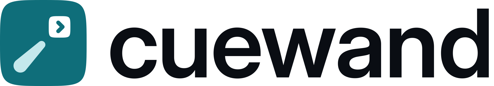
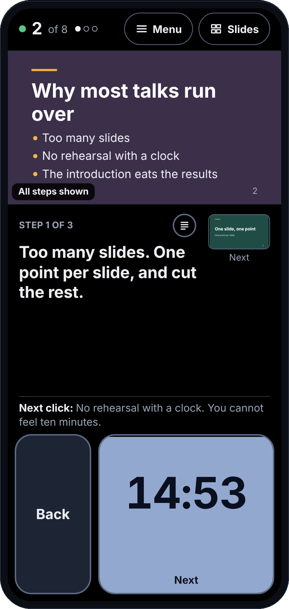
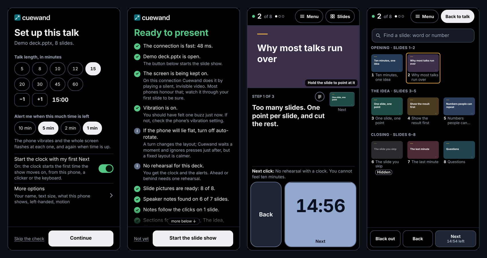
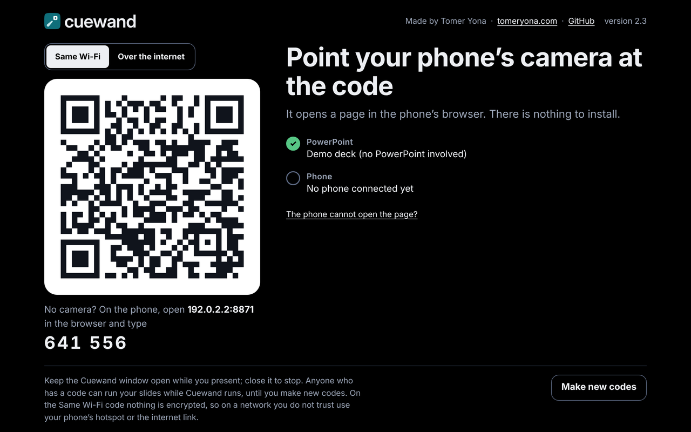

Home / Cuewand

Free PowerPoint remote · no app needed
Your phone becomes the remote for PowerPoint.
Control your PowerPoint slides from your phone: Next and Back, your speaker notes, a talk timer and a laser pointer. Scan a QR code on the laptop and the remote opens in the phone's browser, with nothing to install.
On your phone now? Try the demo here, then download Cuewand on your Windows laptop.
Free .zip from GitHub Releases · Windows laptop with PowerPoint
Open source (MIT, source on GitHub) · Version 2.6 · page updated

Try it: the real phone page
Press Next on the phone. It runs here against a PowerPoint simulator, and the room view shows what the audience would see.

Clicker, laser pointer, speaker notes and timer in one
For talks, lectures, conference presentations and teaching sessions where you want to move around the room without losing your place or your time.
Next is also your clock
A countdown for your talk: the button fills with the time left, turns amber when time runs short, and flashes at the alerts you choose. On Android it also vibrates. It starts with the slide show or with your first Next, as you choose; for a lesson, turn it off.
Notes, one step at a time
Your speaker notes on the phone, with pictures of the current and next slide. Write [click] where an animation step starts, and the phone shows only what to say now.
Laser pointer
Hold the slide picture on the phone, and PowerPoint's red laser dot follows your finger on the big screen. Lift your finger and it goes. New as a trial: zoom the big screen in and out from the phone, and drag to move around.
Find any slide
Search slide titles, slide text and notes, or type a slide number, and jump straight there.
Backup slides for questions
Hide backup slides in PowerPoint and jump to one when a question needs it. Back then returns to the slide you came from.
Black out the screen
Turn the projector screen black from the phone when you want the room's attention on you rather than the slide.
Rehearsal and pace
Time one run-through. During the talk, Cuewand tells you whether you are ahead or behind.
Co-presenters
Any number of phones can connect. Pass the slides to one phone, and the others follow along with the slide, the notes and the clock.
Tablet and left-hand layouts
On a tablet in landscape, a presenter view puts the slide, notes and buttons side by side. Phones can mirror Back and Next for the left hand.
Your clicker still works. A press on the clicker or the keyboard shows up on the phone, and it starts the clock just as the phone does.
Four steps to your first talk
The Windows download carries its own Python, so there is nothing else to install on the laptop. Every program in it is signed, so Windows Smart App Control lets it start.
- Download Cuewand-for-Windows.zip from GitHub Releases and extract it (right-click, Extract All).
- Double-click Start Cuewand.exe. A page opens in your browser with a large QR code. Keep the Cuewand window open while you present.
- Open your deck in PowerPoint: Cuewand finds it by itself, with no file to choose, and makes a picture of every slide. Scan the code with the phone's camera, before or after.
- On the phone, choose when the clock starts (or No clock, for a lesson), set the talk length and alerts and tap Continue. After the ready check, tap Start the slide show.

Requirements, privacy and testing
What you need
- A 64-bit Windows laptop with the PowerPoint desktop app. Earlier versions were tried on Windows 11 with PowerPoint 16. No Mac version, and not PowerPoint on the web.
- Run it on your own laptop, the one that shows the slides, set up before the talk. It isn't meant for a lectern computer you meet minutes before you speak.
- A phone or tablet with a web browser. Nothing to install.
- Phone and laptop on the same Wi-Fi, on the phone's hotspot, or linked over the internet.
Privacy
No accounts, analytics or tracking, and nothing is sent to me. Your notes, slide pictures and presses travel only between the laptop and your phone.
The optional internet link relays them, encrypted, through Cloudflare's free quick tunnels. On plain Wi-Fi the traffic is not encrypted, so on a network you don't trust, use your phone's hotspot or the internet link.
Anyone with the code or the 6-digit number can control your slides while Cuewand runs. Codes last twelve hours; Make new codes on the pairing page cuts every phone off sooner.
How well it's tested
Tried on real PowerPoint 16 and Windows 11 (one presenter): version 2.1 with a full self-test on a 26-slide deck, and version 2.6 with presses, slide pictures and notes from a real phone. Every change is also checked against a PowerPoint simulator and in phone- and tablet-sized browsers: 667 automated checks, plus an automated accessibility audit of every screen.
Not tried yet:
- any iPhone, or a real Android phone since version 1.6, or vibration on a real phone
[click]notes and sections on a real deck- the hotspot route, and the internet link since a reported failure
- PowerPoint's Presenter View with two screens
- a real screen reader
- zoom on the big screen beyond a first try (it is a trial in 2.6)
The full self-test has not been run again on real PowerPoint since version 2.1. Run Test Cuewand.exe on your own deck first, and please report what you find.
Common questions about Cuewand
Can I use my phone as a remote for PowerPoint?
Yes. Cuewand turns your phone into a remote for PowerPoint on a Windows laptop: Next and Back, your speaker notes, a countdown on the Next button and a laser pointer. Start Cuewand on the laptop, scan the QR code with the phone, and the remote opens as a web page.
Do I need to install an app on my phone?
No. The phone only needs a web browser. It scans the QR code, or opens a short address and types a 6-digit number, and the remote opens as a web page. Nothing comes from an app store.
Does it work on iPhone and Android?
It runs in the phone's browser and is built for both. No iPhone has been tried yet, and no real Android phone since version 1.6, so reports are welcome. iPhones don't let a web page vibrate, so on an iPhone the alerts only flash on screen.
Is there a laser pointer?
Yes. Hold the slide picture on the phone and PowerPoint's red laser dot follows your finger on the big screen. It goes away when you lift your finger.
Can I see my speaker notes on the phone?
Yes. Your PowerPoint speaker notes show on the phone, with a picture of the current slide and the next one. Write [click] in your notes where an animation step starts, and the phone shows only the part you need to say now.
Does it have a presentation timer?
Yes. Set the length of your talk and the alerts you want. The Next button fills with the time left and turns amber when time runs short. You choose when the clock starts: when the slide show starts, or with your first Next. Teaching a lesson rather than giving a talk? Choose No clock, and Next is just Next. After a rehearsal, Cuewand tells you during the talk whether you are ahead or behind.
Does it need Wi-Fi or an internet connection?
The phone and the laptop have to reach each other: on the same Wi-Fi, through the phone's own hotspot, or through the optional internet link, which relays the connection, encrypted, through Cloudflare's free quick tunnels. University, hotel and conference Wi-Fi often stops devices reaching each other; then use the hotspot or the internet link. The hotspot route has not been tried yet.
Does it work with Google Slides, Keynote, a PDF or on a Mac?
Cuewand is made for the PowerPoint desktop app on Windows. There is no Mac version, so Keynote is not supported. With no PowerPoint presentation open, Next and Back press the arrow keys on the laptop, which moves Google Slides or a full-screen PDF (click into that window first). That mode has no notes, slide pictures or pace, but the clock still runs.
Can I use it on the venue's lectern computer?
It is made for your own Windows laptop, set up before the talk: run it on the computer that shows the slides. It isn't meant for a lectern computer you meet minutes before you speak.
How is it different from a presentation clicker?
A clicker needs no network and gives you Next and Back, and on some models a laser. Cuewand adds your speaker notes, the time left, slide search and pictures of the slides on the phone, but the phone and the laptop must be connected. You can use both at once: a press on the clicker shows up on the phone.
Can two presenters use it in the same talk?
Yes. Any number of phones can connect, and by default every one can press Next. From the Menu you can pass the slides to one phone; the others follow along with the slide, the notes and the clock.
Who can control my slides?
Anyone who has the code or the 6-digit number, while Cuewand runs. Codes last twelve hours; press Make new codes on the pairing page to cut every phone off sooner.
Is Cuewand free?
Yes. Cuewand is free and open source under the MIT licence. There are no accounts, ads, analytics or tracking, and nothing is sent to the author.
Try it in your next talk
Found a problem, or missing something? Open an issue on GitHub, or email hello@tomeryona.com.